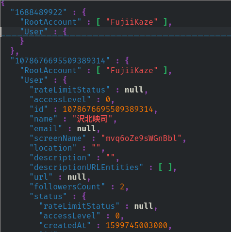
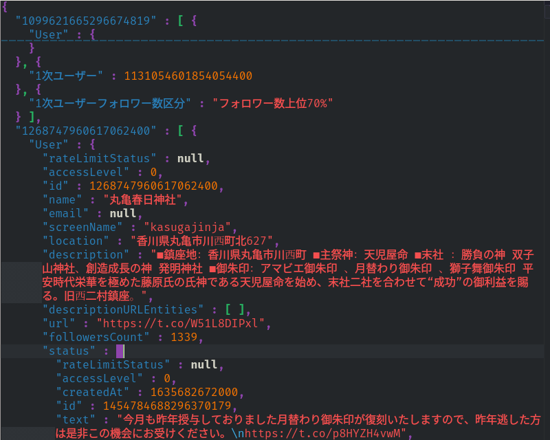
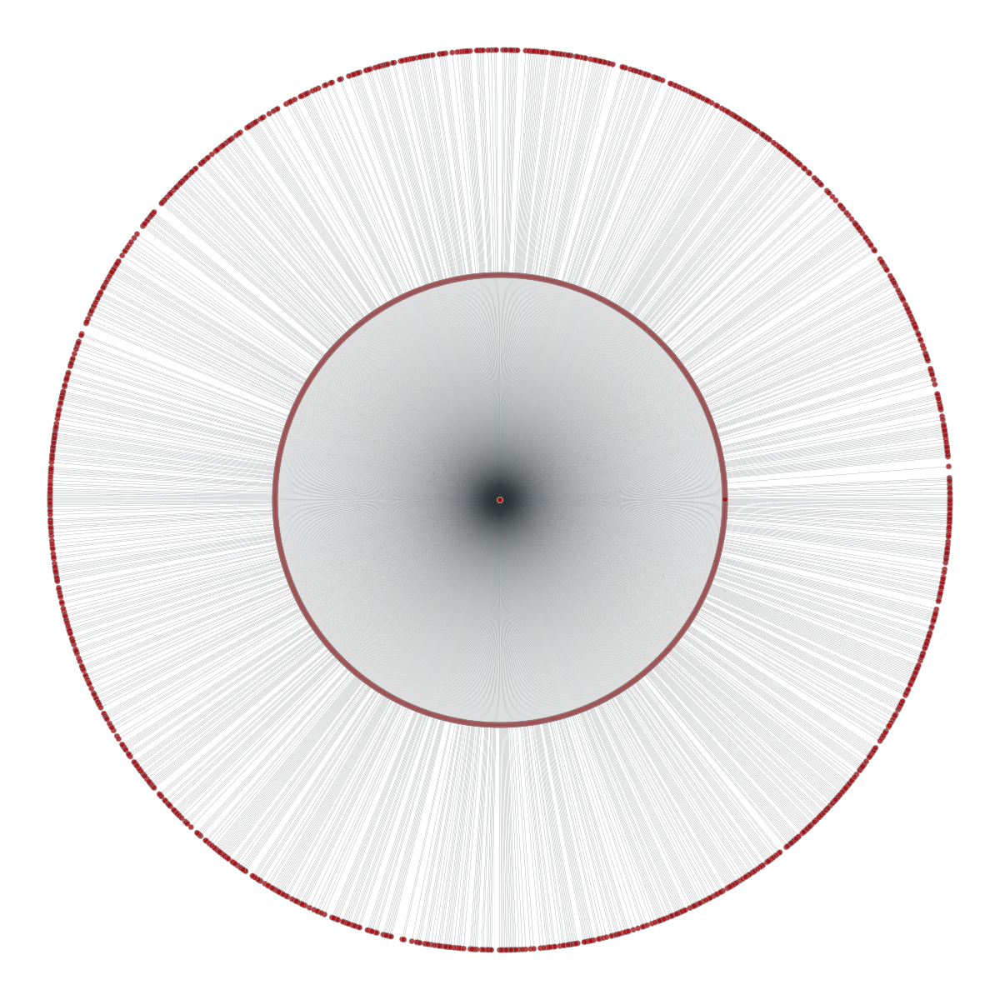
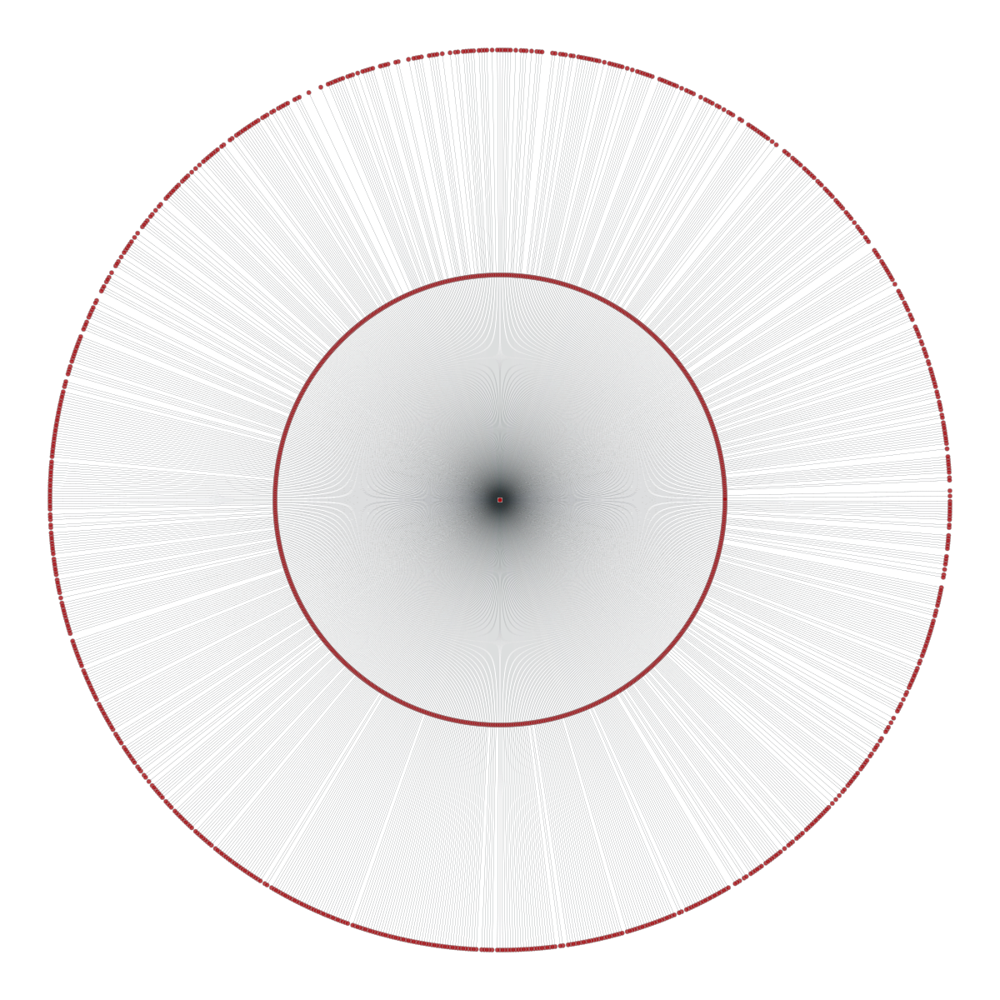

Sony Music Entertainment
ネットワーク分析
jiyan.schneider@gmail.com
Table of Contents
データの確認
Data
1次フォロワー

Figure 1: Follower〇〇.json
2次フォロワー

Figure 2: FujiKaze.json
TODO MOVE THIS SECTION Data Sampling

Figure 3: Data Traversal (幅優先探索)
モチーフ分析
- 3ノードの繋がり方は１３通り存在する

- 三つのノードの間で可能な繋がり方
Significance Profile
注目点
- 分野によって重要性プロファイルが似ている
- それぞれのモチーフの特性を吟味する
Significance Profile

実装の手法例（計画）
- ランダムで作ったネットワークの各モチーフの分布に本ネットワークの分布を比べて需要性プロファイルを作成
- ネットワークにあるモチーフの分布でそのモチーフの重要性を計算数る
- 3-モチーフ、ノードの関係性
- ベースのモデルを選び、それに比べて、モチーフの z-score を算出
- 例えばスケールフリーのネットワークの分布をもつランダムなネットワークをシミュレーション
- シミュレーションだけではなく、典型的なソーシャルネットワークに比べることもできる
- アーティスト同士での significance も計算可能
Z-scoreの算出
\( Z_{i} = \frac{N_{i}^{real} - N_{i}^{rand}}{sd(N_{i}^{rand})} \)
- \( N_{i}^{real} \) (モチーフ \( i \) が実際に起きた回数)
- \( N_{i}^{rand} \) (モチーフ \( i \) がシミュレーションで起きた回数)
ネットワーク構造の結果
TODO ネットワークはこんな感じにできた
| アーティスト | １次フォロワー（数） | 2次フォロワー（数） |
|---|---|---|
TODO hinatazaka46

Figure 5: Hinatazaka46
TODO ILikeAkairo

Figure 6: ILikeAkairo
TODO sakurazaka46

Figure 7: sakurazaka46
TODO hinatazaka46

Figure 8: Hinatazaka46
TODO hinatazaka46
Figure 9: Hinatazaka46
TODO hinatazaka46
Figure 10: Hinatazaka46
モチーフ分析結果
TODO hinatazaka46

Figure 11: Hinatazaka46
TODO ILikeAkairo

Figure 12: ILikeAkairo
TODO sakurazaka46

Figure 13: sakurazaka46
TODO hinatazaka46
Figure 14: Hinatazaka46
TODO hinatazaka46
Figure 15: Hinatazaka46
TODO hinatazaka46
Figure 16: Hinatazaka46
全体のネットワーク
Discussion
Clustering・中心性など
- 木構造になっているため、中心性は出しにくい
- 重み付をつかって